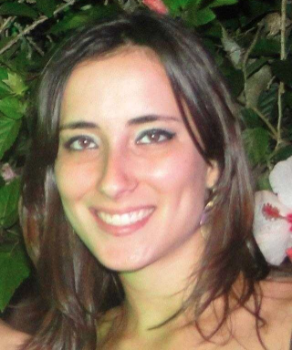

Leonardo Mangia Rodrigues
Universidade Cândido Mendes - RJ
Interseções entre Economia Circular, Mineração Urbana e Logística Reversa de Resíduos de Equipamentos Eletroeletrônicos
Palestra: Uma das grandes preocupações recentes em relação a gestão da produção diz respeito aos resíduos gerados e as questões do pós consumo, ou seja, aspectos pertinentes a logística reversa. Nos últimos anos, tendo em vista a grande demanda por equipamentos eletroeletrônicos, inclusive em países em desenvolvimento, a gestão dos resíduos gerados pela utilização e descarte de tais equipamentos tem sido objeto de reconhecimento tanto por pesquisadores acadêmicos, quanto por profissionais do setor produtivo. Diante deste contexto, um novo paradigma produtivo é necessário para dar conta destes novos desafios da gestão da produção. A economia circular, mineração urbana e a logística reversa emergem como novas frentes do conhecimento humano capazes de propor soluções para tais desafios.

Ana Carolina Salles
IFRJ
TI Verde: Oportunidades e Desafios para Implementar a Sustentabilidade nas Organizações
Palestra: Os problemas ambientais, o esgotamento de recursos naturais não renováveis e o crescimento econômico sem sustentabilidade tornaram-se uma grande preocupação mundial nos últimos anos. No contexto das organizações, a sustentabilidade aparece como tema transversal que perpassa todas as áreas e processos de negócios. Cada vez mais, organizações tem se tornado dependentes da Tecnologia da Informação (TI), o que faz com que este departamento se torne estratégico. A área de TI tem sido responsável por uma parte significativa dos problemas ambientais atuais, principalmente àqueles relacionados o mau uso e ao descarte dos equipamentos eletrônicos. Somando-se os gastos necessários para manter a infraestrutura de TI com servidores, computadores, monitores e demais periféricos funcionando adequadamente, a área de TI já representa a terceira maior fonte de consumo de energia dentro das organizações. Nesse contexto, surge o conceito de TI Verde, um termo genérico utilizado para designar as medidas, atividades e práticas relacionadas à TI que buscam contribuir com os objetivos ambientais da sustentabilidade corporativa e responsabilidade social nos processos de negócio. Estudos mostram que diretores e gerentes de TI têm se mostrado cada vez preocupados com o impacto ambiental. Nesse sentido, diferentes práticas vêm sendo adotadas para reduzir o desperdício e aumentar a eficiência dos processos e fenômenos relacionados à operação dos computadores. Dessa forma, a TI Verde pode ser a solução para boa parte dos problemas ambientais que as organizações enfrentam nos seus processos de operação. O impacto das novas TIs pode repercutir na capacidade de inovação e competitividade das empresas. Igualmente, novas Tecnologias de Informação podem ser fontes de oportunidade e competitividade para empresas por meio do alinhamento das operações (eficiência) aos objetivos estratégicos (eficácia) da organização. As práticas se variam desde iniciativas sobre a conscientização, data center verde; reciclagem e descarte de equipamentos eletrônicos, utilização de fontes alternativas de energia, design e substituição de hardware e software com foco em ecoeficiência, gerenciamento de impressões. Apesar dos desafios relacionados ao custo de investimento e processo de implantação, a adoção de TI Verde pode ser uma oportunidade para direcionar os desafios da sustentabilidade em torno da infraestrutura de TI, pode contribuir para que a área de TI reduza seus impactos ambientais e, consequentemente, os impactos ambientais organizacionais de modo geral. A área de TI pode também oferecer suporte às demais práticas de negócios sustentáveis ambientalmente, bem como exercer um papel positivo na economia de baixa emissão de gases
Fernando Escobar
Softwork Tecnologia
A Insustentável Leveza da Engenharia de Requisitos
Palestra: A palavra Engenharia tenta dar um ar “solene” e “exato” a uma operação que é bastante subjetiva: A interpretação da vontade do usuário! Os ruídos na comunicação entre o usuário e a equipe de desenvolvimento são os maiores obstáculos ao desenvolvimento de softwares simples e eficientes. Se pensarmos em TI sustentável, aí é que o abismo cresce! Citando exemplos reais, colhidos em seus 14 anos trabalhando “dos dois lados” do desenvolvimento de software (Análise de Negócio e Análise de Sistema), Escobar buscará fazer uma análise dos perigos que representa um mau levantamento de requisitos, seja com Diagramas de Fluxo de Dados, Casos de Uso ou User Stories, atentando para os obstáculos que a comunicação pode apresentar. Stories, atentando para os obstáculos que a comunicação pode apresentar.
Ladmir Carvalho
Alterdata
Empreendedorismo é uma Questão de Atitude
Palestra: Muitas pessoas confundem empresário com empreendedor, e desta forma a ideia da palestra será passar os aspectos empreendedores que fazem uma empresa dar certo, é deixar claro que características empreendedoras existem nas pessoas que conseguem sucesso em suas organizações. As teorias serão ilustradas com a história pessoal do palestrante, que começou no segmento de informática aos 21 anos de idade, aos 25 fundou uma empresa de desenvolvimento de software e hoje possui cerca de 1.600 colaboradores e está entre as cinco maiores empresas de software do Brasil.
Renata Araújo
UNIRIO
Da Pesquisa à Inovação: Caminhos para a Sustentabilidade
Palestra: A palestra discute os objetivos, atividades e resultados dos processos de pesquisa científico-acadêmica e dos processos de inovação, traçando as relações e interseções entre estes processos, apontando questões para reflexão a respeito da criação de uma mentalidade empreendedora da pesquisa dirigida à inovação tecnológica e/ou social com vistas a contribuir para os Objetivos de Desenvolvimento Sustentável (ODS).
Angélica Dias
NCE-UFRJ
Sustentabilidade, Acessibilidade e Inclusão: A Importância da Tecnologia Assistiva Diante da Diversidade
Palestra: A evolução da Tecnologia Assistiva no Brasil e sua importância nos diferentes contextos da sociedade. E como a tecnologia assistiva poderá alterar os ambientes organizacionais de forma sustentável, proporcionando maior acessibilidade e inclusão.
Bruna Diirr
UNIRIO
Meninas Digitais: Você Também Pode Ser Uma!
Palestra: A participação de mulheres nas áreas de Sistemas de Informação e Computação é extremamente baixa e está diminuindo ano após ano. Isso é algo preocupante, porque a diversidade em qualquer ambiente é fundamental para representar corretamente seus participantes e ter impactos mais adequados aos problemas por eles enfrentados. A baixa participação feminina nessas áreas leva a pelo menos três potenciais problemas: (a) meninas precisam enfrentar e ganhar espaço em um ambiente formado exclusivamente por homens; (b) perda da perspectiva feminina e todas suas capacidades particulares no desenvolvimento de soluções tecnológicas; e (c) meninas perdendo a oportunidade de se engajarem em uma área promissora e que oferece chances de se tornarem fluentes e ganharem habilidades na linguagem computacional, tão necessária para os cidadãos do século XXI. A palestra apresentará o Meninas Digitais, um programa da Sociedade Brasileira da Computação (SBC) que agrega projetos espalhados pelo Brasil que motivam e aproximam as alunas do ensino médio e fundamental a seguirem carreira na área de Tecnologias da Informação, além de oferecerem apoio às alunas de graduação e pós-graduação já inseridas nesse contexto.
Catherine Beltrão
Universidade Estácio de Sá
ArtenaRede, do Virtual ao Real
Palestra: Apresentação do Projeto ArtenaRede, desde sua criação em 2000, até os dias de hoje. O Projeto ArtenaRede transita pelas áreas de Tecnologia e Arte. Nesta palestra, será apresentado um breve histórico de sua evolução, sendo abordadas as etapas do site, do blog, do livro e do museu.
Painéis
PainelTecnologias no campo
A necessidade de produzir alimentos para atender toda a população, a preocupação com a qualidade desses alimentos e a tônica da eficiência no campo têm sido determinante no desenvolvimento tecnológico no campo. Reunimos especialistas em produção agrícola e em tecnologia para apresentar as tendências desta área tão atual.
Sergio Serra
UFRRJ
João Aguilar
UFRRJ
Sergio Anversa
Universidade Castelo Branco
PainelEmpreendedorismo Digital
O tema da inovação vem ganhando proporções de políticas públicas e de preocupação pelos empresários. Várias ações no âmbito do governo como a promulgação da lei de inovação, ações de estímulo ao empreendedorismo tecnológico e recursos em parcerias com grupos de investimentos vem efervercendo o ecossistema de inovação. Na outra ponta, as empresas vêem apostando na inovação aberta e nos mecanismos de interação com a comunidade de desenvolvedores, como: hackathons, startups weekends e outros para mitigar seus esforços de criação de novas soluções que superem seus hiatos nas cadeias de valor.
O painel apresentará e discutirá as iniciativas das organizações públicas e privadas para estimular e promover o surgimento de startups com impacto na geração de empreendimentos que superem os gargalos burocráticos e empresarias de momento e de futuro.
Este painel é uma estratégia para aproximar as mulheres com a área de tecnologia da informação, através de apresentações e discussões sobre a formação, histórico profissional, projetos desenvolvidos na área de TI e o posicionamento da mulher no cenário da tecnologia. As discussões propostas visam estimular a introdução de mais diversidade ao trabalho na área de TI.
Juliana França
UFRJ
Catherine Beltrão
ArtenaRede
Carla Lage
Marinha do Brasil
Fernanda Bruno
Dataprev